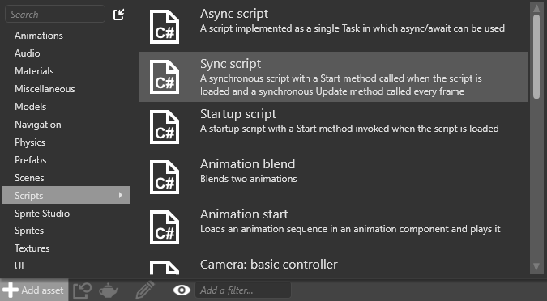
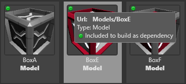
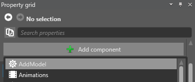
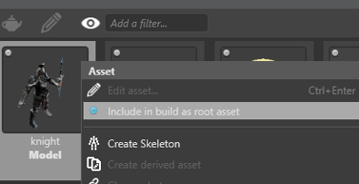
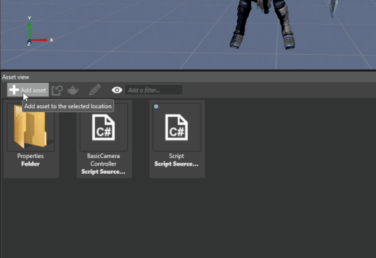
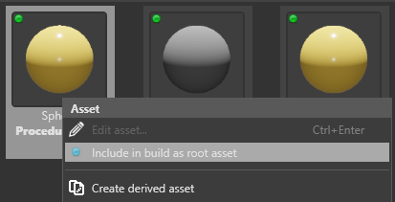

Create a model from code
Warning
Приносим свои извинения за неудобства. Для этой страницы нет перевода на русский язык. Она будет отображаться на английском языке.
Beginner Programmer
You can create models in scripts at runtime. You can do this in several different ways, including:
creating a model from an asset
creating a procedural model using built-in geometric primitives (eg a sphere or cube)
instantiating a prefab that contains a model (see Use prefabs)
Create a model from an asset
Create a new, empty synchronous script. For full instructions, see Create a script.

In the script, load the model using its asset URL. For example:
// Create a new entity and add it to the scene. var entity = new Entity(); SceneSystem.SceneInstance.RootScene.Entities.Add(entity); // Add a model included in the game files. var modelComponent = entity.GetOrCreate<ModelComponent>(); modelComponent.Model = Content.Load<Model>("MyFolder/MyModel");Tip
To find the model's asset URL, in the Asset View, move the mouse over the model. 
Add the script as a script component to any entity in the scene. It doesn't matter which entity you use. For instructions, see Use a script.

In the Asset View, right-click the model you want to create at runtime and select Include in build as root asset.

This makes sure the asset is available for the script to use at runtime. For more information, see Manage assets.
Create a procedural model
Create a new, empty synchronous script. For full instructions, see Create a script.

Add the script as a script component to any entity in the scene. It doesn't matter which entity you use. For instructions, see Use a script.
In your script, instantiate an empty entity and an empty model. For example:
// Create an entity and add it to the scene. var entity = new Entity(); SceneSystem.SceneInstance.RootScene.Entities.Add(entity); // Create a model and assign it to the model component. var model = new Model(); entity.GetOrCreate<ModelComponent>().Model = model;In your script, create a procedural model using built-in geometric primitives (eg a sphere or cube). For example:
// Add one or more meshes using geometric primitives (eg spheres or cubes). var meshDraw = GeometricPrimitive.Sphere.New(GraphicsDevice).ToMeshDraw(); var mesh = new Mesh { Draw = meshDraw }; model.Meshes.Add(mesh);Note
To use the code above, make sure you add
using Stride.Extensionsto the top of your script.Alternatively, create a mesh using your own vertex and index buffers. For example:
// Create a mesh using your own vertex and index buffers. mesh = new Mesh { Draw = new MeshDraw { /* Vertex buffer and index buffer setup */ } }; model.Meshes.Add(mesh);Here is a more complete example that draws a custom triangle..
var vertices = new VertexPositionTexture[3]; vertices[0].Position = new Vector3(0f,0f,1f); vertices[1].Position = new Vector3(0f,1f,0f); vertices[2].Position = new Vector3(0f,1f,1f); var vertexBuffer = Stride.Graphics.Buffer.Vertex.New(GraphicsDevice, vertices, GraphicsResourceUsage.Dynamic); int[] indices = { 0, 2, 1 }; var indexBuffer = Stride.Graphics.Buffer.Index.New(GraphicsDevice, indices); var customMesh = new Stride.Rendering.Mesh { Draw = new Stride.Rendering.MeshDraw { /* Vertex buffer and index buffer setup */ PrimitiveType = Stride.Graphics.PrimitiveType.TriangleList, DrawCount = indicies.Length, IndexBuffer = new IndexBufferBinding(indexBuffer, true, indices.Length), VertexBuffers = new[] { new VertexBufferBinding(vertexBuffer, VertexPositionTexture.Layout, vertexBuffer.ElementCount) }, } }; // add the mesh to the model model.Meshes.Add(customMesh);
Note
For more information about how to set up vertex and index buffers, see Drawing vertices.
Finally, you need to give the model one or more materials. There are two ways to do this.
Option 1: load a material in code
In your code, load one or more materials and add them to the model. Because models can use multiple materials (one for each mesh in the model), use Mesh.MaterialIndex to specify which materials in the list are used for which mesh.
For example:
// Add one or more materials. Because models might expect multiple materials (one per mesh), Mesh.MaterialIndex specifies which material in the list is used for which mesh. Material material = Content.Load<Material>("MyFolder/MyMaterial"); model.Materials.Add(material);In the Asset View, right-click every material asset your script uses and select
Include in build as root asset.
This makes sure the asset is available for the script to use at runtime. For more information, see Manage assets.
Option 2: Create new materials in code
For example:
// Create a material (eg with red diffuse color).
var materialDescription = new MaterialDescriptor
{
Attributes =
{
DiffuseModel = new MaterialDiffuseLambertModelFeature(),
Diffuse = new MaterialDiffuseMapFeature(new ComputeColor { Key = MaterialKeys.DiffuseValue })
}
};
var material = Material.New(GraphicsDevice, materialDescription);
material.Parameters[0].Set(MaterialKeys.DiffuseValue, Color.Red);
model.Materials.Add(0, material);